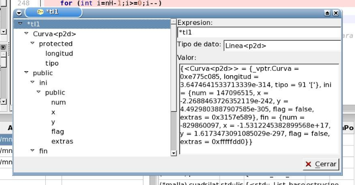

Diálogo
Explorador de Inspecciones

Para acceder a este diálogo debe introducir una inspección en el
Panel de Inspecciones
, y seleccionar la opción "Explorar datos" del menú contextual (click derecho sobre la inspección).